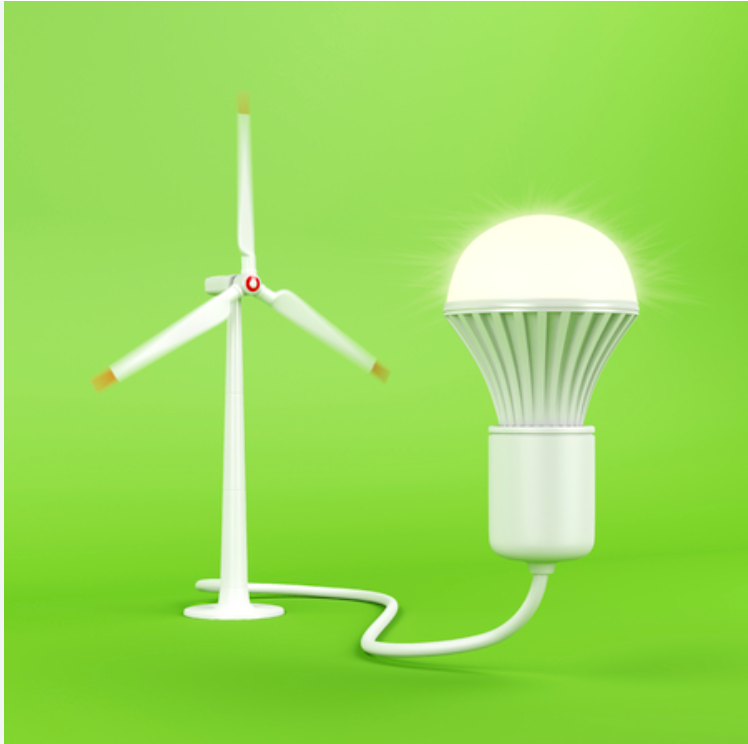
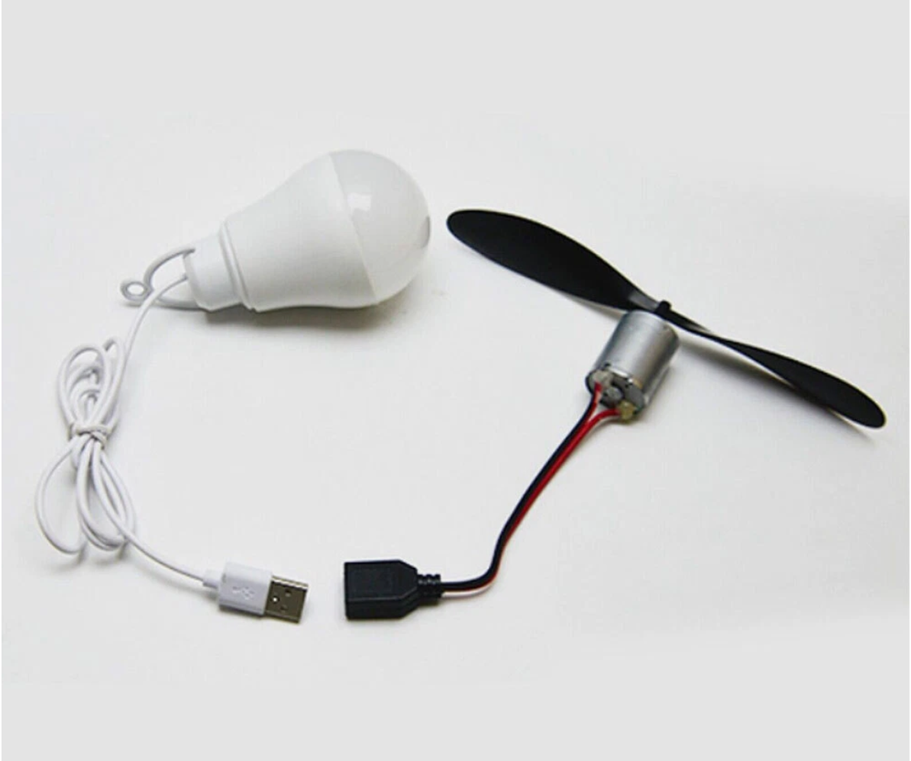
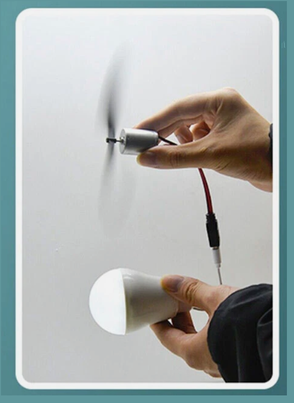

العنفة الهوائية
جهاز يحوّل الطاقة الحركية للرياح إلى حركة دورانية، ثم يحوّل المولد هذه الحركة إلى طاقة كهربائية.
نركّب دارة كهربائية بسيطة، ونحوّل حركة الهواء إلى كهرباء، ثم نستقصي أثر سرعة الرياح في دوران العنفة وقراءات الجهد والتيار وإضاءة المصباح.
المفاهيم الأساسية
جهاز يحوّل الطاقة الحركية للرياح إلى حركة دورانية، ثم يحوّل المولد هذه الحركة إلى طاقة كهربائية.
العنفة تستفيد من حركة الهواء لتوليد الكهرباء، بينما المروحة تستهلك الكهرباء لتوليد حركة الهواء.
عندما تزداد سرعة الرياح تزداد سرعة دوران الشفرات عادةً، فتزداد الطاقة التي يمكن أن يحوّلها المولد، ضمن مجال التشغيل الآمن.
تصل الأسلاك المولّد بالمصباح في مسار مغلق. نختار مصباحًا مناسبًا لخرج المولّد ونتحقق من إحكام التوصيلات.
في التجربة الأساسية: نغيّر سرعة دوران العنفة بتغيير سرعة الهواء فقط، ونقيس فرق الجهد وشدة التيار ونلاحظ حالة المصباح. ونثبّت الدارة والعنفة والمسافة عند المقارنة.
جرّب بنفسك
غيّر سرعة الرياح، ثم اضغط تشغيل التجربة. يثبّت النموذج العنفة والمولد والحمل، ويعرض علاقة تعليمية تقريبية بين المتغيرات. لا تمثّل قيم الجهد والتيار قياسات مخبرية أو مواصفات عنفة حقيقية.
تجارب جاهزة
اضبط القيم ثم شغّل التجربة.
سجّل وقارن
| المحاولة | سرعة الهواء | الإنتاج النسبي | سرعة نموذج العنفة | الجهد | التيار | حالة المصباح |
|---|---|---|---|---|---|---|
| لم تُسجَّل نتائج بعد. | ||||||
أفكّر ثم أتحقّق
فكّر في الإجابة أولًا، ثم اضغط «إظهار الإجابة» وقارنها بإجابتك. عبّر بكلماتك مع الحفاظ على المعنى العلمي.
إجابة نموذجية
تستقبل العنفة حركة الهواء وتحولها إلى دوران يمكن أن يشغّل مولّدًا. أما المروحة فتستخدم محركًا يستهلك الكهرباء ليدير شفراتها ويحرّك الهواء.
النتيجة المتوقعة وتفسيرها
في نموذج النشاط، مع ثبات الدارة، تزيد سرعة الدوران والجهد والتيار عادةً، ويضيء المصباح عندما يصبح خرج المولّد كافيًا وقد تزداد إضاءته. ينطبق ذلك ضمن مجال تشغيل النموذج؛ قارن هذا التوقع بقياساتك الفعلية.
النتيجة المتوقعة وتفسيرها
طاقة حركة الرياح، ثم حركة دورانية للشفرات ومحور المولّد، ثم طاقة كهربائية في الدارة، ثم ضوء وحرارة في المصباح.
إجابة مقترحة مع التفسير
أغيّر سرعة الهواء فقط، وأثبّت العنفة والمولّد والمصباح والتوصيلات والمسافة. أقيس الجهد والتيار وأسجل حالة المصباح في كل محاولة؛ فتكون المقارنة مرتبطة بالعامل الذي غيّرته.
لخّص عمل مجموعتك وفق عناصر التقرير المطلوبة.
صور توضيحية



المواد المساندة
شرائح حول استخدامات الرياح ومكوّنات العنفة وآلية توليد الكهرباء.
ملف قابل للتنزيل للاستخدام أثناء تنفيذ التجربة وتسجيل القياسات.
اطبع الصفحة بعد إدخال القياسات والنتائج للاحتفاظ بتقريرك.
بُنيت خطوات التجربة وجدول القياس وسؤال المصباح على نشاط ٢:١:١ في الصفحة ٤ من كتاب التكنولوجيا المرفق، ودعم عرض طاقة الرياح شرح مبدأ العمل والمكوّنات. المحاكاة نموذج تعليمي مبسّط للمقارنة وليست أداة قياس مخبرية.